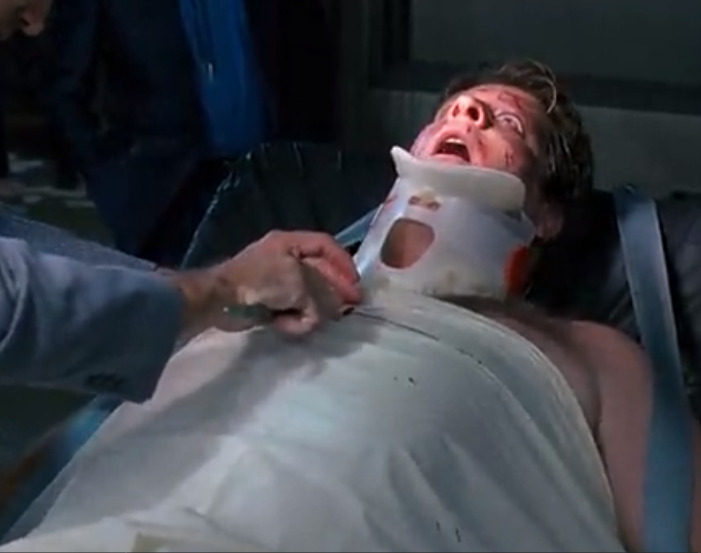
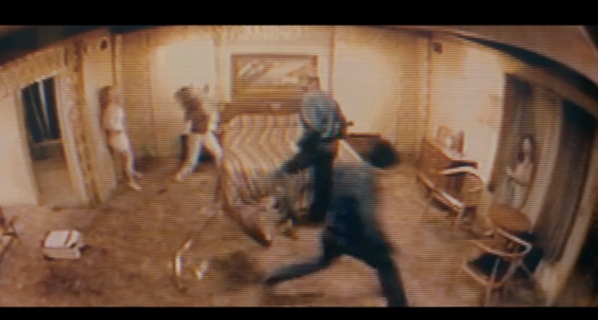

I don’t like horror movies. But this short story is not about that particularly. Horror movies are different: murders, ghosts, fantasy etc.
I don’t like horror movies of any kind. But I still can watch them. 1408, final destination, the saw etc.
The only thing that scares me in horror movies are people. Not blood, not ghosts.
Here I’d like to share few movies, which traumatized my psyche in the childhood (and not only).
#1 Rumble in the Bronx
Movie with Jackie Chan can be scary? Oh, hell it can…
Scene where man was put into machine which makes sawdust from logs… Holly Molly. This was like a nightmare in a childhood. I even didn’t know what movie it was. Figured it out many years later by occasion and was surprised that it is movie with Jackie Chan and that it is literally the only scary scene in the movie.
#2 Robocop 2
Robocop is pretty sad movie, but scene where bad guys killed future robocop with shotguns was eventually not so scary. But this was:

Autopsy as a punishment… F*ck, this is *@#$
#3 Vacancy
This is movie I almost watched on a previous weekend by occasion. And it is just beyond understanding. Couple in a motel figured out that in the room previously terrible murders and sadistic scenes took place and this couple is most likely are next victims…
And they show how some unknown guys hang up a man and rape women…
This is just beyond understanding

# Conclusion
What scenes in a movies are the most scary? Scenes which could be in a real life.
Ghosts, vampires… Nah
Situations which potentially can happen in a real life are really frightening.
Good night.